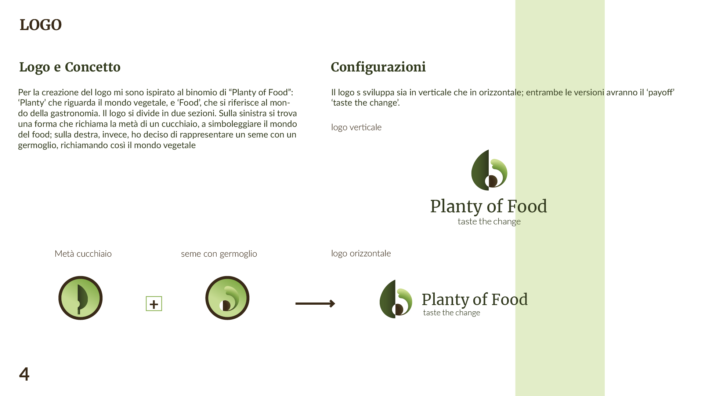
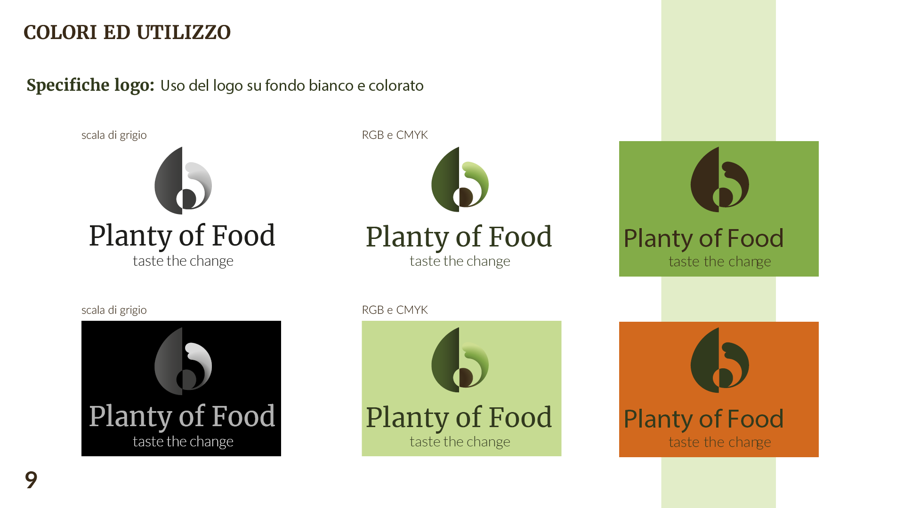
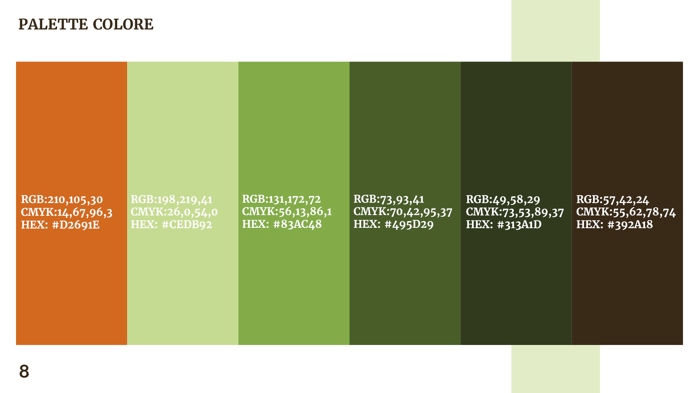
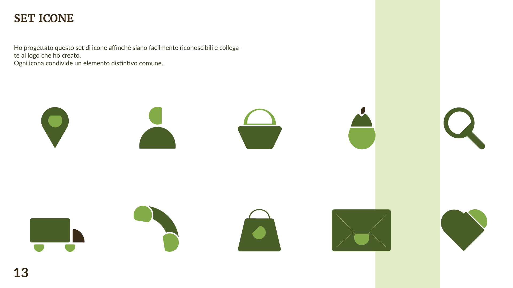
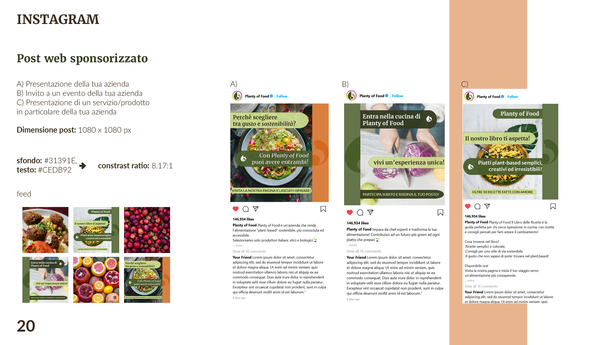
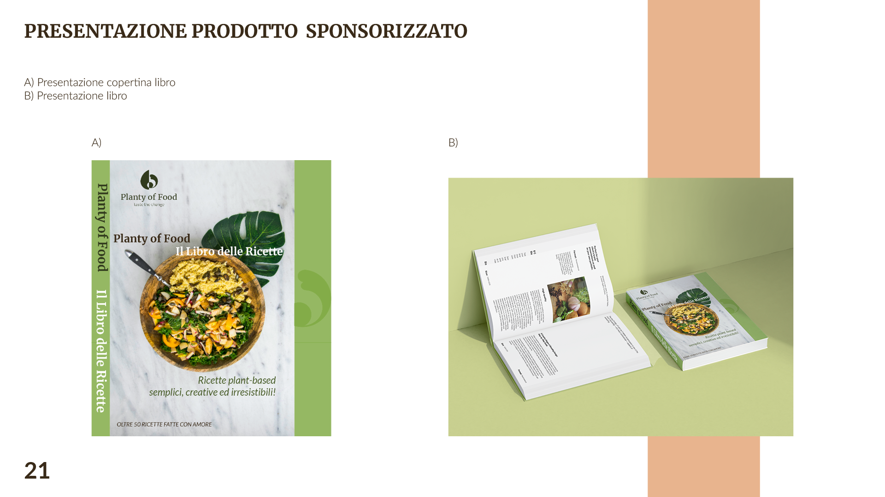

Planty of Food
The Project
Development of the brand identity for Planty of Food:
a start-up aimed at making truly sustainable plant-based nutrition more accessible and widely recognized.
The project included the creation of a logo, a complete icon set, the definition of the color palette and typography, and the development of a conceptual social media communication strategy.
Role&Tools
Role:UX/UI Designer
Client: POF:Planty of Food
Tools: Illustrator, Indesign, Photoshop
Project Preview





